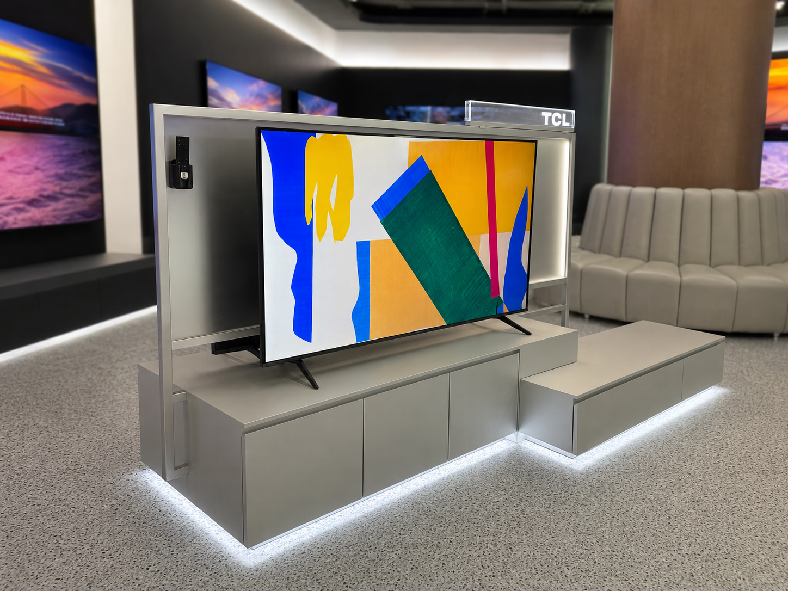
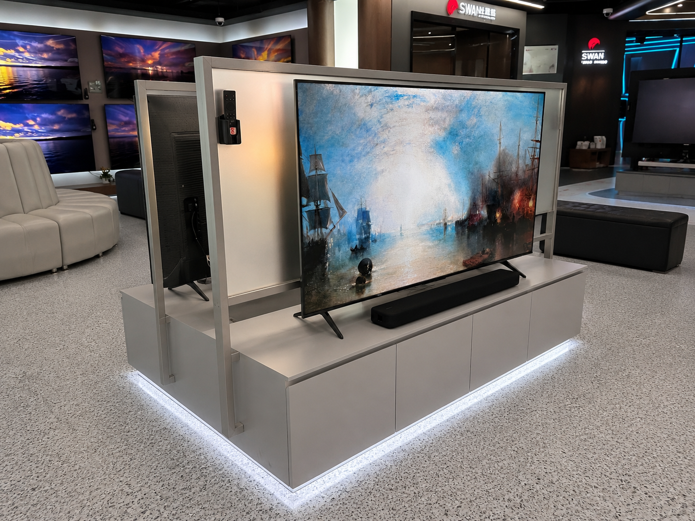
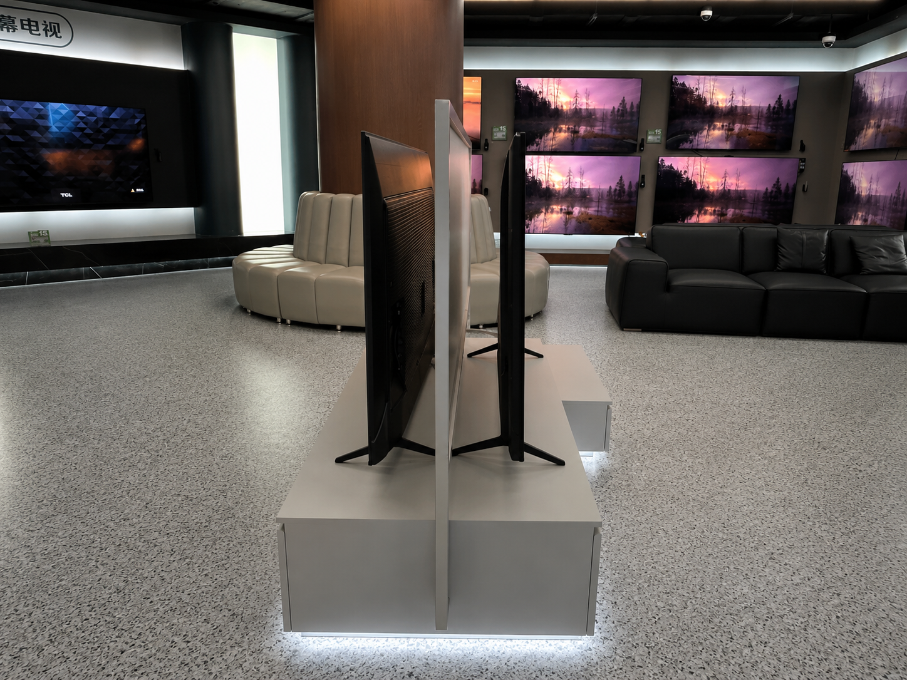
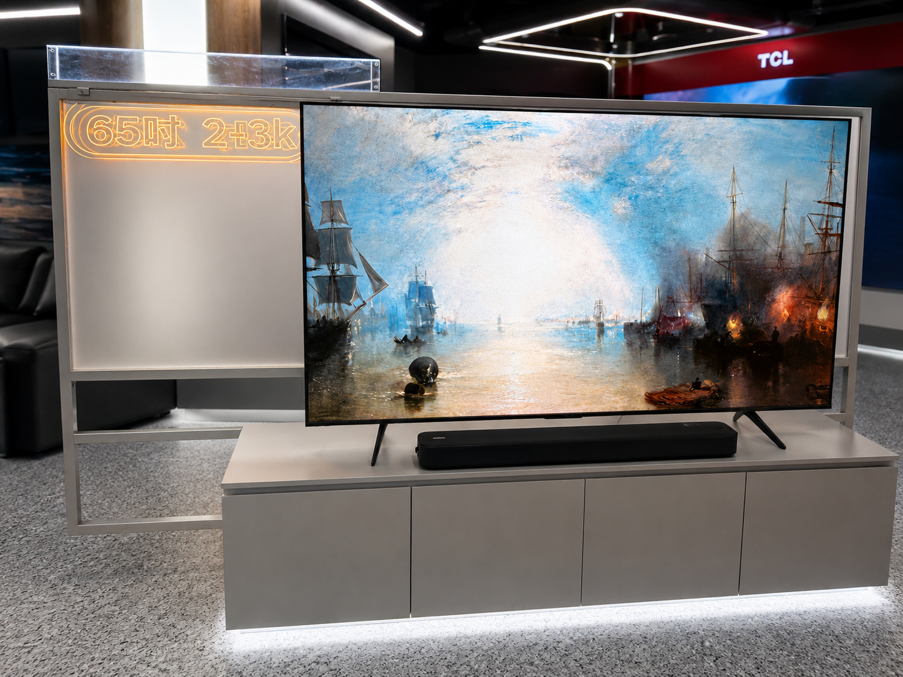
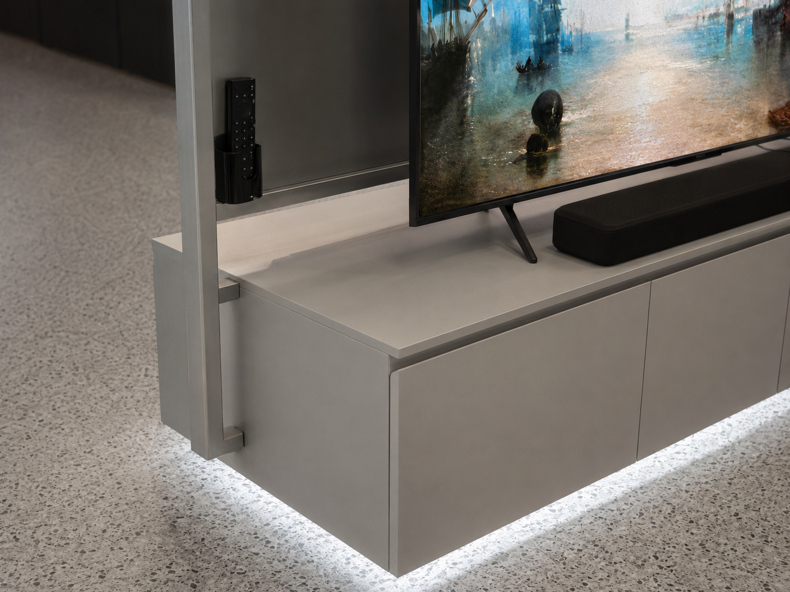

TCL TV Display System
A television display becomes more useful when product viewing, specification communication and hidden storage are resolved within one freestanding structure.
The TCL TV Display System is a custom double-sided retail fixture designed and manufactured by REYI. Two television presentations share a central structural frame, allowing different models or screen experiences to face opposite customer routes. Integrated remote holders, specification communication, soundbar presentation, concealed cabinets and perimeter lighting turn the system into a complete in-store comparison and demonstration point.

One central frame organizes two screen experiences without creating visual clutter
The complete product includes the double-sided support frame, two television presentation faces, low storage cabinets and illuminated perimeter base. The frame keeps both screens aligned while leaving each side open for customer viewing. Remote-control holders, soundbar positions and specification communication are integrated into the fixture rather than added as loose accessories, producing a cleaner and more controlled sales environment.

Four coordinated decisions make the display practical from both sides
Back-to-Back Presentation
Two screen faces share one structural spine, supporting product comparison or separate viewing stories within a compact retail footprint.
Integrated Communication
Specification panels, remote holders and accessory positions stay attached to the fixture, keeping information visible and the presentation orderly.
Low Storage Architecture
Full-width cabinets create a stable base while providing concealed space for accessories, cables, packaging and daily store operations.
Perimeter Lighting
Continuous light beneath the cabinet gives the freestanding system a lighter visual presence and clarifies its footprint on the sales floor.
The system becomes clear through three controlled details

The narrow side view reveals how two televisions, one central frame and a shared cabinet base are aligned into a compact double-sided structure without unnecessary depth.

The illuminated specification panel gives key product information a fixed architectural position, while the soundbar and screen remain visually connected to the cabinet below.

The remote holder, precise support connections, flush cabinet doors and continuous base light show how small operational details are incorporated into the finished fixture.
Planning a double-sided television display system?
Share the store plan, screen schedule and communication brief with us. REYI can coordinate the structural frame, television mounting, cabinet dimensions, remote-control holders, soundbar positions, specification communication, cable routing, ventilation, lighting and installation-ready construction. Programs can be ordered through a brand headquarters and delivered for use in markets worldwide.
- Store plan
- Screen schedule
- Viewing directions
- Brand brief
- Power & cable needs
- Delivery timeline